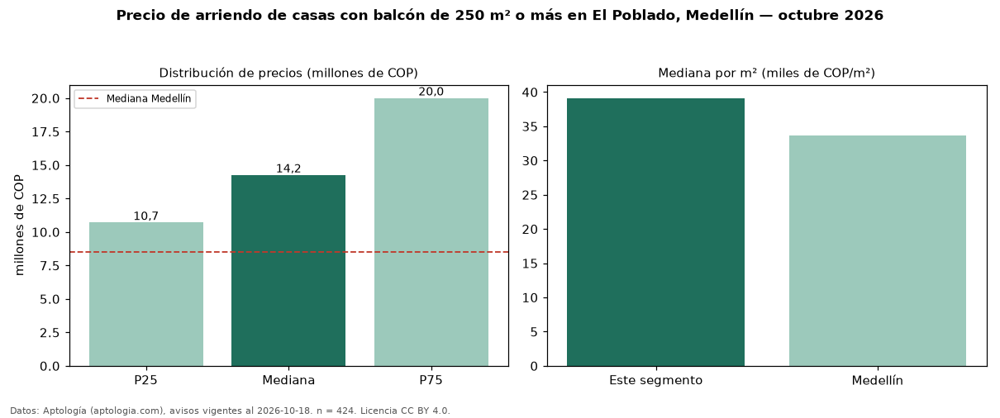

Precio de arriendo de casas con balcón de 250 m² o más en El Poblado, Medellín — octubre 2026
En El Poblado, Medellín, la mediana de canon mensual de casas con balcón de 250 m² o más es COP 14,25 millones, según 424 avisos vigentes. Frente a la mediana de las casas con balcón en arriendo de El Poblado (COP 12,50 millones, n = 588), queda 14 % por encima; este segmento reúne el 72 % de esos avisos. Por metro cuadrado, la mediana es COP 39.118/m² al mes (n = 422), 3 % por debajo de las casas con balcón en arriendo de El Poblado (COP 40.201/m²). El área mediana anunciada es 350 m². El segmento con más oferta es el de 3 o más habitaciones (417 avisos, mediana COP 14,20 millones). La administración mediana declarada es COP 925.000 al mes (n = 38), aparte del canon. La mitad central de los avisos va de COP 10,70 millones a COP 20 millones (razón 1,9), una dispersión moderada. El estrato más frecuente es 6 (88 % de los avisos con estrato). Datos: Aptología (aptologia.com), CC BY 4.0 — https://www.aptologia.com/casas-en-arriendo/medellin/el-poblado. Archivos: PDF, CSV con las cifras y gráfica PNG.

| Avisos únicos | 424 |
|---|---|
| Percentil 25 | COP 10.700.000 |
| Mediana | COP 14.250.000 |
| Percentil 75 | COP 20.000.000 |
| Mediana por m² | COP 39.118 |
Fuente: avisos vigentes de portales inmobiliarios recopilados por Aptología, deduplicados (mínimo 30 avisos únicos por celda). Precios pedidos, no cerrados. Fecha: 2026-10-18.